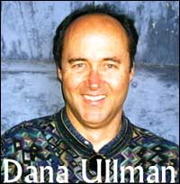

¿Demonios o esquizofrenia?

Aparentemente ha habido una fuerte demanda de exorcismos en los últimos tiempos, de modo que los líderes de la Iglesia Católica de la ciudad de Genoa, Italia, que no descuidan jamás un mercado potencial para la superstición aprobada, han anunciado la creación de una fuerza de trabajo de doctores y sacerdotes para determinar si el Diablo está actuando o si se necesita verdadera ayuda psiquiátrica. La fuerza de trabajo, creada por el cardenal Tarcisio Bertone, consiste de un equipo de tres sacerdotes, un psiquiatra, un psicólogo y un neurólogo. Ahora están trabajando en casos que se les presentan… y, amigos, ¡en verdad hablan en serio!
Este comité determinará, en su profunda sabiduría, cuándo hay un caso de esos molestos demonios en acción, y si lo autentican (¿?) llamarán a un exorcista oficial, quien cantará, lanzará agua bendita alrededor, realizará “imposición de manos”, le ordenará al Diablo que se vaya, y seguirá adelante como si todo eso hiciera algo para aliviar el problema. Pero, admitió un oficial quien sabiamente pidió que no se mencionara su nombre, algunos problemas serían mejor tratados por un psicólogo. Cuán perceptivo.
Aunque la iglesia no habla con frecuencia abierta o libremente sobre los exorcismos, por la razón que sea (¿podría ser que algunos de sus miembros están simplemente avergonzados?), el Cardenal Bertone dijo que la necesidad de esta acción existe. Dijo: “Se ha vuelto más difícil hablar sobre Satán, pero los signos del diablo son palpables”.
Cardenal, sea serio, viva y despierte. Dejamos atrás toda esa cháchara en el siglo XIV. Ah, me olvidaba. Ustedes todavía están allí.
La conexión Maharishi
El lector Martin Lürßen lanza alguna luz sobre el pensamiento del Dr. Volkamer y sus motivos para escribir libros como el que se describió en los comentarios publicados aquí en las últimas dos semanas.
El Dr. Volkamer fue un candidato durante las elecciones para el concejo europeo en 1999 y en varias elecciones en Alemania como miembro del Naturgesetzpartei alemán (Partido de la Ley Natural). Este partido es el brazo político del “Culto de Maharishi”, un culto totalitario y lavador de cerebros. El punto principal de su programa político para 1998 era que el Bundesregierung contratara 7000 “voladores yóguicos” que dispersarían energía positiva y por lo tanto volver inexistentes el crimen y la tensión en toda Alemania por medio de la meditación y el dar saltitos arriba y abajo con las piernas cruzadas.
Puede hallar más información sobre el culto de Maharishi y el Naturgesetzpartei en alemán en el sitio de la AGPF, enlaces en http://www.agpf.de/tm1.htm y http://www.agpf.de/TM-Naturgesetz-Partei.htm. El AGPF es una organización abarcativa de varias asociaciones alemanas y austríacas, que brindan consejo a las personas que abandonan cultos y sectas, consejo para padres de niños que se convierten o son miembros de sectas o cultos, etc.
Sabiendo esto, las cosas son mucho más claras para mí en relación con el abandono del sentido común y un enfoque científico correcto por parte del Dr. Volkammer, como evidencia su postulado de una nueva forma de materia y una nueva/vieja/absurda teoría de la visión. Cualquiera atrapado en los brazos del Yogui Maharishi Mahesh, el gurú barbado que fundó en 1957 el movimiento de Meditación Trascendental (MT), es casi invariablemente apartado del sentido común y se convierte en un adulador; pocos pueden volver a salir. MT es una variante del hinduísmo en el cual se le dice al seguidor que puede alcanzar un estado de “conciencia extática”. Esta es una exhibición sonriente y despreocupada que los MTistas promueven para expresar el goce y éxtasis inexpresables en el que se hallan inmersos, 24 horas al día. MT enseña la oción de Maharishi de la “Ciencia y Tecnología Védica”, junto con las “Teorías Absolutas del Gobierno, la Educación, la Salud y la Defensa”, que él afirma elevarán cada área de la vida a la perfección, y aportar una familia internacional de naciones libre de enfermedades y problemas. El Maharishi llama a la base de todo esto “Ley Natural”. No es la primera vez que hemos oído esto.

El mago Doug Henning y el beatle George Harrison no sólo fueron atrapados completamente por el movimiento MT, sino que ambos se presentaron a elecciones para cargos públicos en la boleta del “Partido de la Ley Natural”, Doug en Canadá y George en el Reino Unido. Anunciaron que el Maharishi les había prometido que ganarían; ninguno lo hizo, obteniendo sólo un par de puntos de porcentaje del total de votos emitido. Cuando Doug contrajo una enfermedad terminal, abandonó el tratamiento médico regular reemplazándolo por la meditación, y pronto murió. Los MTistas aseguran que no murió de verdad, y que cuando “hizo el cambio” se hallaba en estado de éxtasis. Es tranquilizador. Pero Doug igualmente fue enterrado.
Lo extraño es que, aunque el movimiento MT (todavía) pide dinero constantemente a los gobiernos del mundo para cumplir proyectos que nunca se completan y en la mayoría de los casos ni siquiera se iniciaron, ni uno solo de los miembros se ha ofrecido para ganar el premio de la JREF por levitar…
Hipnotismo revisado

Recordarán ustedes que hablé sobre la ciudad de Windsor, Ontario, Canadá, y el obispo Ronald Fabbro, quien viajó atrás en el tiempo para invocar una regla medieval del Almanaque Católico, que prohíbe la práctica del hipnotismo “con fines recreativos” porque “los sujetos hipnóticos pueden ser inducidos para realizar actos inmorales los cuales, normalmente, no cometerían”. Fabbro quiere que todas esa prácticas pelibrosas y malignas sean declaradas ilegales en su jurisdicción. Bien, la legisladora del estado de Kansas, la Senadora Janis Lee, se ha opuesto al obispo. Ha presentado un proyecto de ley para derogar la prohibición estatal de Kansas sobre las exhibiciones hipnóticas. Janis sabe sobre estos temas: “Conozco muchos casos donde el hipnotismo puede haber sido útil”, anunció mientras presentaba el proyecto. Dijo que Kansas es el único estado que prohíbe el hipnostismo para el entretenimiento o el espectáculo, una ley que establece una multa de US$ 50. Un negocio de su distrito pidió la derogación luego de intentar contratar un hipnólogo para entretenimiento, dijo.
Esta gente debería organizar sus supersticiones. Uno de ellos piensa que la hipnosis funciona y trae el mal (¡qué miedo!) y el otro piensa que es benéfica. Ninguno de estos “líderes” del público y formadores de opinión dudan que es real, en lo absoluto. ¿Deberíamos enviarles copias de “Supersticiones para Idiotas”, quizá?
Se vende fantasma en una caja

Un artículo vendido hace poco en eBay atrajo mi atención gracias a las advertencias de varios lectores. Se vendía como una “caja de dybbuk”, en la cual se dice que la alma de un pecador muerto que ha transmigrado al cuerpo de una persona viva puede capturarse y aprisionarse. En lo personal, esta afirmación me parece bastante dudosa.
Sin embargo, el dueño de la caja maravillosa (en cuya promoción se afirmaba que todavía tenía dentro el alma del pecador) proporcionaba una descripción escrita del artículo, y el testimonio adjunto del vendedor era bastante revelador:
Tenía dudas sobre la caja “encantada”, y todavía no creo en lo paranormal. Lo que sucedió en agosto y septiembre probablemente sólo es una coincidencia, así que lo relataré tal como lo escribí originalmente en un diario.
Domingo 31 de agosto de 2003. Durante la semana pasada, sucedieron cosas interesantes, aunque posiblemente sean coincidencias. Primero, comparto una casa con otras seis personas; hemos estado turnándonos en dormir con la caja en la habitación de cada uno de nosotros. Ahora dos personas se quejan de que les arden los ojos, uno está lánguido y carente de energía, y el otro se enfermó espontáneamente. En retrospectiva yo diría que son alergias. Algunos días luego de que se iniciaron estas incomodidades crecientes, el aire aufera de la casa se llenó de bichitos por varias horas, un viernes. ¿Cosas raras del verano? Anoche, el sábado, descubrimos que la caja, ubiada ahora en la esquina trasera de la casa, se había abierto casi del todo, aunque había estado cerrada y parece improbable que alguno pudiera haberla tocado o hubiera querido hacerlo.
Miércoles 10 de septiembre de 2003. Aunque parece imposible probar que la caja es una causa directa del infortunio, definitivamente hemos visto una ola gigantesca de “mala suerte”. Los malos olores ahora invaden la casa, el basurero del fondo desborda con basura y desechos, un compañero de habitación de pronto se enfermó de bronquitis, y yo me rompí un dedo. Varios ratones han muerto en el motor de un auto, y más dispositivos electrónicos mueren a diario: xbox, tostadora, televisor y relojes.
Sugiero que la basura desbordante puede deberse a que nadie se ocupó de sacarla, y los “extraños olores” pueden apoyar esa explicación, “se enfermó” ahora es “se enfermó espontáneamente”, la presencia de bichos en el aire de una tarde de agosto se aprecia como un evento notable, y ¿cuán “de pronto” llegó la bronquitis? ¿O estoy siendo demasiado simplista? El dueño continuó:
En verdad no quiero hablar de nada que haya sucedido entre septiembre y enero, así que sólo diré que ahora vendo la caja por algunas razones:
Cerca del 6 de octubre, empecé a sentirme mal, con problemas para dormir. El problema persiste hasta hoy.
Ahora vivo solo, y últimamente he notado que estoy cambiando muchas lamparitas quemadas, y estoy teniendo que hacer arreglar el auto por muchas razones extrañas (el líquido de la transmisión se consumió en el contenedor).
Empecé a ver cosas, como grandes borrones verticales oscuros en mi visión periférica.
Huelo a algo como arbustos de junípero o el escozor del amoníaco en mi garage, con frecuencia, y no sé de dónde viene.
Lo más perturbador, el último martes (27 de enero de 2004) empezó a caérseme el pelo. Hoy (viernes) se me cayó casi la mitad. Apenas tengo veintitantos años, y el examen de sangre que me hizo el médico dio bien. Quizá tenga que ver con el estrés, no lo sé.
No voy a analizar esta última parte, salvo para decir que veo muchas posibilidades de que lo que sucede aquí sean eventos bastante ordinarios. Auque no tengo una caja de dybbuk en mi casa, yo mismo he tenido algunos de esos síntomas. Ya puedo escucharlo: “¿Nada convencerá a este escéptico dedicado?” En cualquier caso, esta caja misteriosa fue vendida con éxito en eBay por unos pocos cientos de dólares. Sospecho que seguiremos oyendo historias de horror en relación con esto, pero con seguridad no me mantendrán despierto…
Más super-agua a la venta

Una señora en Highland, California, me escribió:
Mi tía de 73 años en Pennsylvania está siendo víctima de un engaño. Es una de esas personas que confían en la gente y creen lo que sea que les digan, o sea, una tonta. El problema es que ella compró este líquido (es sólo agua) que alguien le dijo que cura toda clase de cosas, ¡incluso cáncer! Ella es una loca por los temas de salud y cree todo lo que lee, etc. En ninguna parte de la botella dice lo que contiene pero dice que Dios lo tocó. ¡Hermano! Traté de decirle que no desperdicie su dinero en esto, especialmente porque tiene un ingreso fijo muy pequeño. ¿Puede ayudarme a convencerla? Estoy intentando hallar un profesional para que comprueba este líquido y mostrarle que NO ES lo que ella afirma que es. ¿Hacen esas cosas en su Fundación? O bien, ¿puede usted referirme a un laboratorio profesional en California que haga eso?
Le respondí a esta persona preocupada, asegurándole que si se descubría que el agua era sólo eso, no haría ninguna diferencia en la opinión de su tía o de cualquier otro creyente. Después de todo, eso es sólo ciencia en funcionamiento, ¡y la ciencia no lo sabe todo! No, no hay forma de convencer al creyente verdadero de que ha cometido un error. Pero debería saber algo más sobre esta sustancia mágica. Mi corresponsal proporcionó algunos detalles más:
Seguiré intentando hacer algo más para detener a este tipo. Hay un sitio web sobre esto, en caso de que le interese leer sus mentiras. Se llama Miracle II (http://www.the7thfire.com/HG/Miracle2/Miracle2story.htm) y hay en verdad varios sitios que la venden. Uno de sus “productos”, que no son más que detergente y algún tipo de aceite, dice en la parte de atrás de la botella:
¡REGOCÍJESE! Ha comprado un producto Miracle II Outreach. La mezcla más compleja de minerales y orgánicos naturales que jamás haya sido unida. Miracle II es un producto formulado por medio de la revelación espiritual. Agítese antes de usar. Contiene: agua alterada eléctricamente y por la oración, elóptica, energizada, estabilizada y oxigenada; ceniza de solución de dodecyl; dehidrabietilamina; calcio; magnesio; agente espumante; palta (aguacate); almendras; aceites de oliva y coco; vitamina E biodegradable concentrada naturalmente; y el ungimiento de Dios. Miracle II contiene y retiene energía espiritual y elóptica más allá de toda medida. Perfecto para la piel y el cabello secos.
Es broma, ¿verdad? He intentado buscar qué significa palabras tales como “energía elóptica”, pero ni siquiera puedo encontrar si son palabras reales o no… Por favor dígame si este es un producto “real” a juzgar por lo que dice el contenido, ¿está bien?
Bien, en mi experiencia, tal galimatías no significa nada, y es el resultado de una persona ignorante buscando y hallando varias palabras y frases técnicas a las que puede darse buen uso para defraudar al inocente. Es sólo un caso de ponerlas juntas como perlas en un hilo, tengan sentido o no. Dése cuenta de que muchas de tales personas realmente creen que tienen algo para decir y que lo están diciendo. Este es un autoengaño común.
Creo que una respuesta mejor reside en el siguiente listado. Es una masa de palabras que describen las enfermedades que se supone que Miracle II cura, varios usos que pueden dársele, problemas psicológicos que responderán a él, usos cosméticos, y usos de limpieza. Los listo aquí como apaarecen en la página web, y tenga en mente que todos y cada uno de ellos están seguidos por la expresión “¡Regocíjese y brinde la Gloria de Dios!”
Acondicionador para el pelo, Aerosol para el pelo, Alergias, Ampollas febriles, Arrugas, Artritis, Bronquitis Caballos, Candida albicans, Caspa, Cataratas, Celulitis, Champú para el cabello, Colesterol, Colmenas, Constipación, Cortes, Cáncer - Linfoma folicular, Cáncer, Cólicos, Defectos y lunares, Dermaitis, Desodorante axilar, Desodorante, Dolor de oídos, Ducha, Enema, Energía, Enfermedad de la Guerra del Golfo, Enfermedad de Lyme, Escaras, Fumar, Gatos, Gel lubricante, Gingivitis, Gota, Hemorroides, Hepatitis, Herpes, Hiedra venenosa o roble venenoso, Hiperactividad, Hombros, Hongos en las uñas de los pies, Indigestión, Infección por levaduras, Jabón de baño y ducha, Lavado y lubricación de ojos, Lentes de contacto, Limpiador de hígado y riñón, Loción para después de afeitarse, Lupus, Mal de Alzheimer, Mal de Crohn, Manchas de vejez, Manchas en la dentadura, Manos y pies, Marcas y cicatrices de estiramiento, Nervios, Ojo rojo, Olor corporal, Olor en los pies, Olores, Orzuelos, Pancreático, Parásitos, Paspadura de pañal, Perros, Picaduras de insecto, Picazón de deportista, Pie de atleta, Piel seca, Pies cansados, Piojos, Presión sanguínea alta, Problemas de acné, Problemas de dientes y boca sensible, Problemas de piel agrietada, Problemas de piel, Problemas de tiroides, Próstata, Psoriasis, Pérdida de peso, Quemaduras de sol y bloqueador solar, Quemaduras, Reforzador de células T, Removedor de maquillaje, Resfrío común, Salpullido, Sangrado nasal, Sida, Síndrome de Ryder, Talones, Torceduras, Toxemia, Tumores, Varicela, Venas varicosas, Vesícula biliar, Úlceras de la boca, Úlceras.
¡Guau! Cada uso y remedio excepto para la credulidad, contra la que parece no tener efecto…
Haré sólo una observación más. En el tratamiento prescrito de la varicela con este unto, se especifica que el paciente debe aplicarse la sustancia después de que aparece la erupción. Esta es una táctica obvia de escape, ya que esta enfermedad ya está empezando a convertirse en algo del pasado para el momento en que esto sucede. No serviría aplicar la medicación antes de que aparezcan las erupciones, ya que eso mostraría que no funcionaba. ¡Ingenioso!
También notarán ustedes que la mayor parte del tiempo la dosis requerida son “siete gotas”, reflejando la apelación a los números místicos y la magia que hace esta gente para vender su producto. Pero tenga en mente que los usuarios que han sido atraídos a esta falsa medicina incluso en este momento están midiendo cuidadosamente las gotas de la sustancia y esperan curas milagrosas. Es bastante triste.
Los policías psíquicos fallan de nuevo
El reciente secuestro y asesinato de una niña de 11 años aquí en Florida atrajo atención mundial. Su secuestro fue capturado por una cámara de seguridad en Sarasota, y pasaron varios días antes de que se hallara su cuerpo. Chuck Chambers, un invesigador privado contratado por la familia de la niña luego de haber consultado con un “psíquico investigativo”, que “les proporcionó direcciones y pistas”, dijo que estaba tratando de ver si había alguna conexión con las direcciones provistas por el psíquico, quien es de Nashville, Tenesee. El padrino de la niña dijo que la familia se vio alentada porque el psíquico “sentía que ella aún estaba viva, pero está en un lugar donde está a oscuras y atada”. Golpe bajo y obvio. Su familia estaba frustrada por momentos, pero conservó la esperanza de que la niña volvería a casa. No lo hizo, y el psíquico estaba muy eqivocado. Había sido violada y muerta a las pocas horas de su secuestro.
El lector Gregory Camp nos presenta un relato de una situación similar:
Hace poco, la historia de la desaparición del estudiante Dru Sjodin, de la Universidad de Dakota del Norte, fue noticia nacional. Aunque se apresó a un sospechoso, ni la señorita Sjodin ni sus restos han sido hallados aún. ¡Sin embargo, no hay de qué preocuparse! De acuerdo con los departamentos de policía de Grand Forks y North Dakota, los han inundado unas 600 ofertas de psíquicos de toda la nación para ayudar a encontrar a la joven mujer. Esta noticia fue anunciada en un programa de noticias local de Dakota del Norte junto con el resultado obvio: “Los departamentos de policía informan que a la fecha ni una sola pista provista por estos supuestos psíquicos ha provisto siquiera una pista sólida”. Es de destacar que los oficiales del cumplimiento de la ley no pidieron tal ayuda y no se toman en serio sus afirmaciones.
Y sin embargo, en todo el mundo, las agencias de cumplimiento de la ley seguirán llamando a “psíquicos” y soportarán horas de descripciones interminables, descripciones, detalles, generalidades y las viajes falsedades de siempre, esperando obtener algún tipo de ayuda. Pero no lo harán.
El lector Karl Lean, de Melbourne, Australia, sobre este mismo tema, escribe:
El lunes pasado mi esposa y yo estábamos mirando un programa televisivo que trataba sobre las investigadores policiales sobre una serie de asesinatos seriales de hace unos años en Australia Occiental. La transcripción completa se encuentra en http://www.abc.net.au/austory/content/2003/s1042100.htm. La parte que me gustaría destacar, sin embargo, es la siguiente cita del padre de la primera víctima:
Nuestra situación es un poco diferente de la de los Glennon y los Rimmer, porque se encontró a sus dos hijas. Todavía no contestaron nuestras preguntas en lo que se refiere a dónde está Sarah y qué le pasó realmente. Otro gran problema que hemos tenido fueron los clarividentes. Han sido un gran tormento para mí y mi familia al dar pistas crípticas de dónde podría estar Sarah. Recuerdo una noche de los primeros días en las que estuve en Salter Point, ¿sabe?, trajinando las áreas pantanosas de allí a las once de la noche. Em… probablemente dando vueltas por ahí reventándome los ojos y sin lograr nada. Quiero decir, muchas veces supe que no debí haber escuchado, pero siempre pensé que quizá están usando la excusa de ser clarividentes para darme hechos honestos.
Esta parte del programa hizo que mi esposa estallara en lágrimas e ira. Ahí quedan las afirmaciones de “sólo para entretener” o “sólo para divertirse”. La cita anterior debería servir en algo para responder a los muchos que preguntan qué daño hace esto.
Visión mental y precognición
Ahora hay un suceso verdaderamente interesante en la ciencia, aunque me temo que su rótulo puede resultar desafortunado, y se sacarán conclusiones sobre él que van más allá de lo que se justificaría. Como mago, siempre he sabido que los practicamos el engaño tendemos a desarrollar sensibilidades afinadas para los movimientos extraños del cuerpo, los movimientos del ojo, los sonidos muy ligeros, y otros pequeños fragmentos de información sensorial. Aunque en algún momento yo solía preguntarme por qué me sentía incómodo, especialmente cuando practicaba lo que se conoce como trucos “en primer plano” en una mesa, a medida que pasaba el tiempo me di cuenta de que estaba usando mi visión periférica y que también era muy sensible a las ropas susurrantes y a los cambios en los ritmos de la respiración, entre otros ejemplos de participación. Desde “el rabillo del ojo” estaba recibiendo pequeñas acciones corporales o cambios de actitud que con frecuencia me advertían que había sido “pescado”, o sea detectado, por el espectador en una cierta posición que podría haberle permitido atraparme en un movimiento crítico.
Ahora bien, no hay nada sobre natural sobre todo esto, por supuesto. Es mi oficio particular el que me hace sensible a tales cosas. Me imagino que es fácil para mucha gente asumir que tienen una capacidad sobrenatural cuando experimentan tal momento de percepción, pero yo me he vuelto inmune a hacer tales suposiciones. Leí con gran interés una historia reciente sobre una investigación realizada por un psicólogo en relación con lo que él decidió llamar “visión mental”. Los medios han invocado el término “sexto sentido”, y esto es algo sobre lo que siempre he discutido. Aunque por lo general reconocemos la vista, el olvato, el tacto, el oído y el gusto como los “cinco sentidos” clásicos, en realidad hay varios más, aunque podríamos referirnos sin necesidad a las muchas variaciones sobre casi cualquiera de los sentidos básicos. (Elegí no seleccionar la discriminación de colores como un sentido específico, prefiero incluirlo con la vista.) Ciertamente, también hay un sentido de temperatura, otro de movimiento, de dolor, orientación y presión.
Todos hemos experimentado la sobrenatural sensación de saber algo pero no saber cómo se lo sabe. Tal habilidad, más allá de desarrolarla personas en profesiones específicas que la requieren, puede haber evolucionado también a lo largo de millones de años para alertarnos sobre las pequeñas pistas que señalan el peligro, dándonos por lo tanto una ventaja en la batalla por la supervivencia.

El psicólogo Dr. Ronald A. Rensink, en el Departamento de Psicología de la Universidad de Columbia Británica en Vancouver (Canadá) condujo el estudio reciente que descubrió la “visión mental”, y dijo “Creo que este efecto explica muchas de las creencias en el sexto sentido”. Los resultados de sus pruebas fueron informados en la revista New Scientist, la popular publicación científica británica.
El equipo de Rensink demostró el efecto en pruebas con voluntarios que mostraron que algunos eran conscientes de que se había alterado una imagen, sin poder decir dónde se había hecho el cambio. El equipo de Rensink le mostró a cuarenta sujetos una serie de pares de imágenes fotográficas en una pantalla de computadora. Cada imagen fue exhibida por un cuarto de segundo, y esa imagen fue seguida por una breve pantalla vacía gris. A veces los pares de imágenes eran exactamente los mismos, pero algunos pares consistían de dos imágenes sutilmente diferentes. Cuando se mostraba una imagen alterada, cerca de un tercio de los voluntarios informaron sentir que había habido un cambio, antes de que pudieran identificar cuál era el cambio. En las pruebas de control necesarias, aquéllas en las que no se hicieron cambios en uno de los blancos presentados en cada par, los mismos individuos exitosos tenían una confianza significativa en que no se había alterado nada.
El Dr. Rensink cree que la “visión mental” puede ser la razón de que alguien entre en una habitación y sienta que algo está distinto, sin ser capaz de identificar claramente cuál es la diferencia. Cree que aquéllos que no experimentan tales sentimientos pueden estar ignorando su intuición en favor de lo que parece ser información más racional. O puede que no sean sensibles a dichos cambios.
Aunque este científico está principalmente preocupado con los aspectos visuales de la “visión mental”, por supuesto se da cuenta de que también pueden estar involucrados otros sentidos. Un efecto similar que involucra el sentido del oído podría explicar el conocimiento de que alguien está detrás de uno, incluso aunque no pueda vérselo.
Pero ahora damos un giro hacia lo sobrenatural. El doctor Rollin McCraty, director de investigación en el Instituto de HeartMath 1 en California, informa que su investigación muestra que podemos ser conscientes de un suceso hasta siente segundos antes de que ocurra. Dice que deberíamos preguntarnos: ¿Cuántas decisiones he tomado que terminaron siendo correctas,en las que la intuición fue una información importante? Y dice, bastante correctamente: “Es una parte verdadera de nuestros sistemas sensoriales”. Bien, eso también depende de la definición que uno tenga de “intuición”. El diccionario Webster dice que es “percepción directa de la verdad, hecho, etc., independientemente de cualquier proceso de razonamiento; adquisición inmediata de conocimiento”. No dice que no puede basarse en experiencia previa o entrenamiento, y creo que el “proceso de razonamiento” mencionado probablemente no se supone que sea instantáneo o casi. Eso permitiría que una reacción rápida y cuidadosamente aprendida (o incluso un esquema preprogramado) fueran considerados intuición, así que, con esa salvedad, estoy de acuerdo.
Sin embargo, en este punto el Dr. McCraty y yo tenemos una diferencia de opinión y de expectativas; su investigación fue realizadas sobre un grupo de personas a las que se mostró una sucesión de imágenes. La mayor parte de las imágenes presentadas eran calmas y pacíficas, pero estaban intercaladas con imágenes amenazantes de choques de autos o serpientes a punto de atacar. Las manos de los sujetos estaban conectadas a una máquina que medía la secreción de sudor, y se les controlaba el pulso. Entre cinco y siete segundos antes de que vieran una de las imágenes negativas, descubrió, sus niveles de sudor y sus pulsos aumentaron, lo que debería indicar una respuesta inconsciente de temor. Lo que dice es que sus sujetos estaban viendo en el futuro, dado que en una disposición mecanizada para una prueba como la que él describe, no podrían haber obtenido ningún dato sensorial. esto es, por supuesto, si las condiciones del experimento son tal como se ha señalado. En las descripciones que he leído, no he visto que se especificaran aleatorización ni precauciones para hacer un estudio doble ciego, aunque probablemente (es de esperarse) esos elementos estaban presentes.
¡De modo que el Dr. McCraty tiene un derecho obvio a reclamar el premio de la JREF! ¿Se presentará? No lo creo, porque buscando un poco se encuentra una frase suya en la que declara que las emociones vienen tanto del corazón como del cerebro. Para citarlo:
¿Por qué experimientamos los sentimientos positivos especialmente en el área del pecho en torno al corazón? ¿POr qué se ha asociado el corazón con el amor y la compasión y la sabiduría, el valor y todas estas cosas a lo largo de los milenios? Estamos empezando a descubrir la razón para ello; a encontrarle sentido. Y lo que puedo decirles es que el corazón es realmente parte del sistema emocional.
Ahora bien, no puedo decir que solamente esta extraña afirmación me llevó a la conclusión de que el Dr. McCraty no se presentaría por el premio de la JREF, sino que cuando descubrí que además está asociado con el Dr. William A. Tiller y el Doctor Gary Schwartz, las señales de tormenta se oían fuertes y claras. Esos dos caballeros que tanto han trabajado con todo, desde hablar con los muertos hasta las afirmaciones sobre “el poder de la pirámide”. ¡Ah! Ahora ustedes también oyen las señales, ¿verdad?
Dado que el Dr. Schwartz ha evitado cuidadosamente presentarse por el premio del millón de dólares, espero que le sugerirá fuertemente al Dr. McCraty que no se presente, ni acepte una invitación. ¡Maldición!
Aire caliente fraudulento en acción
Acabo de leer estas burradas de alguien que vende una “nueva” idea para mover un vehículo. Estoy seguro de que también moverá un montón de dinero a su cuenta bancaria…
Automóvil de aire: automóvil de aire comprimido. Un vehículo neumático es un auto normal como el que usted y yo conducimos excepto que su planta de potencia es un motor de expansión que funciona con la energía interna (calor solar) del aire comprimido, en lugar de con un motor de combustión que funciona con combustible. Si más gente supiera que el aire comprimido es energía solar, todos estaríamos conduciendo automóviles de aire en la actualidad. Dejen el petróleo en la tierra, estudien este sitio web, y únanse a nosotros para trabajar por el día en que nuestros estilos de vida serán compatibles con la Tierra, nuestro hogar. Para saber más sobre la ENERGÍA SOLAR SOBRE RUEDAS, siga leyendo.
El aire comprimido probó ser la mejor forma de energía para los vehículos antes de que los combustibles fósiles fueran adoptados como el status quo. Es hora de un nuevo status quo en los medios energéticos. En este punto de nuestro desarrollo como civilización no podemos permitirnos nada salvo lo mejor: vehículos neumáticos.
Pneumatic Options enseña los hechos sobre la forma de energía más segura, más limpia, más accesible y más económica que existe en este planeta: ¡EL AIRE COMPRIMIDO!
¿El aire comprimido es “energía solar”? No creo… En su sitio, http://www.aircaraccess.com/solar.htm, nos damos cuenta de cuán ridícula es esta afirmación:
La implicación obvia de esta afirmación, que encontrará usted citada por cada autor libro de texto que cintamos a continuación, es que la fuente de la capacidad del aire comprimido para realizar su trabajo es el calor que recibió del sol. Este concepto es de tal importancia que no intentaré glosarlo nuevamente aquí; reimprimiré las partes relevantes de los textos normales sobre aire comprimido y los libros de termodinámica, y usted podrá juzgar por sí mismo.
Lo que sigue es una lista de citas, todas tomadas completamente fuera de contexto, que el “inventor” afirma prueban su afirmación. O bien no sabe nada sobre ciencia y tecnología, o directamente está confundiendo a sus lectores. Elijo la opción número dos. Lo que sigue a la cita de arriba, prueba mi objeción al trabajo chapucero que realiza la Oficina Estadounidense de Marcas y Patentes, la cual, al dar patentes a los inventores chiflados, da validez a la noción de que podría haber algo en sus afirmaciones:
Tenga en mente que la Oficina de Patentes de Estados Unidos da patentes continuamente a los diseñadores de motores de aire autoalimentados. La oficina de patentes no da patentes para máquinas de movimiento perpetuo que no tienen fuente de energía, y aunque ni la oficina de patentes ni los patentados son abiertos en relación con la fuente de energía que hace patentables esas máquinas, cuando se ve cuántas de esas patantes existen, uno debe saber que algo pasa. Pero no tengo secreto que proteger y patente alguna que atesorar para mí mismo, así que aquí está la documentación que prueba la Conexión Solar- Neumática.
Vaya a http://patft.uspto.gov/ y haga clic en el punto “Patent Search Number” (“Búsqueda de número de patente”) en el área verde de la izquierda, y luego ingrese el número 4,370,857… y lea sólo el resumen, para ver que este es otro de los sistemas de energía autoalimentados que tan tontamente apasionan a los inventores aficionados.
¿Gene Simmons, un científico?
El lector Sean Ellis de Farnham, Surrey, Reino Unido, comparte esto con nosotros:
Hace unas semanas, tuve la buena suerte de visitar San Diego, y como tenía cierto tiempo libre visité el Centro Científico Reuben H. Fleet, en el frondoso y atractivo Parque Balboa. Me agradó ver muchos niños allí, aprendiendo sobre ciencia y tecnología. Sin embargo, pese a que la tienda tenía varios títulos de la editorial Prometheus, me molestó bastante un título como para enviarles el siguiente e-mail:
Visité el Centro Científico RHF durante una visita a San Diego el miércoles, y en general quedé impresionado. Sin embargo, me desilusionó en grado sumo notar que la tienda vendía un título llamado “La guía K.I.S.S. sobre la astrología”.
La astrología no es una ciencia, ni debería presentarse a los niños como ciencia. La inclusión de este libro en su tienda socava el propósito mismo del centro: estimular a las mentes jóvenes y promover el pensamiento científico y crítico. También resta valor al resto de la tienda, ya que presenta el mensaje de que los artículos que contiene no fueron elegidos con cuidado.
Me interesaría oír la razón por la cual este libro fue considerado adecuado para la tienda del Centro Científico.
Suyo, Sean Ellis
Dado que les he dado bastante tiempo para responder (no han creído oportuno hacerlo), pensé en informarle a usted también, en caso de que esto le interese lo bastante para incluirlo en su comentario habitual.
ESTA ES UNA CORRECCIÓN DE LA PRIMERA VERSIÓN DE ESTE ARTÍCULO: Apenas días después de publicar esta queja de Sean Ellis, recibimos esta notificación:
Estimado señor, me complacería que pusiera usted la siguiente respuesta luego del artículo “¿Gene Simmons, un científico?” de su publicación online del 20 de febrero de 2004.
Nos agradó mucho saber que el Sr. Ellis disfrutó su visita a San Diego y a nuestro centro de ciencias. Nuestra misión aquí es “inspirar el aprendizaje de por vida mejorando la comprensión y disfrute de la ciencia y la tecnología por parte del público”, y nos empeñamos en hacer precisamente eso en todas las áreas de nuestra instalación, incluyendo nuestra tienda.
Ayer recibí un e-mail del Sr. Ellis afirmando que teníamos un libro sobre astrología en nuestra tienda. Antes de la hora de apertura de hoy, verifiqué que de hecho teníamos dos copias de este libro. Inmediatamente lo retiramos de los anaqueles, y me reuní con el coordinador de reposiciones. Parece que el libro fue surtido por error; de hecho habíamos pedido dos copias de un libro de astronomía de Dorling Kindersley, y en lugar de ello nos enviaron un libro de astrología. Este error de parte de nuestro repositor, por desgracia, no fue detectado a tiempo antes de que se les pusiera precio a los libros y se los acomodara en los estantes. Lamentamos profundamente que los libros estuvieran en nuestra tienda, aunque haya sido por poco tiempo, ya que estamos de acuerdo con el Sr. Ellis que son completamente inadecuados para un Centro de Ciencias.
Estoy en desacuerdo con el Sr. Ellis cuando dice en su mensaje “Dado que les he dado bastante tiempo para responder (no han creído oportuno hacerlo)”, ya que su primer mensaje aparentemente fue dirigido a una dirección de correo electrónico incorrecta, y nunca lo recibimos. En el momento en que recibimos un e-mail suyo (esta mañana, el primer día hábil), este asunto se resolvió de inmediato, antes de que la tienda se abriera al público.
Me gustaría agradecer al Sr. Ellis nuevamente por traer nuestra atención a este lamentable error, y también agradecer a la Fundación Educacional James Randi por su trabajo en crear una nueva generación de pensadores críticos. Gracias.
La carta estaba firmada por el señor Francis French, Coordinador de Programas Educativos del Centro de Ciencia Reuben H. Fleet, de San Diego, California.
Ese uso desafortunado de una dirección de e-mail incorrecta fue resuelto, y nos disculpamos sinceramente con el señor French y sus colegas del Centro por este error inadvertido. Nos agrada saber que fuimos de alguna ayuda en este asunto, y que el Centro está tan preocupado por su imagen y su deber a sus patrocinadores. Sölo desearía que otros que trata ncon el público respondieran tan rápida y correctamente. ¡La ciencia está viva y bien en San Diego! Les recomiendo su excelente sitio en http://www.rhfleet.org para ver cuán bien organizada está esta gente. ¡Y veo que fueron los primeros en EE.UU. en instalar el sistema de proyección IMAX!
Más ruido sobre el feng shui
El lector Richard Rockley obtuvo una victoria parcial…
Parece que quizá podemos hacer una diferencia con las críticas racionales. Pensé que podía interesarle el cambio de énfasis de Leyland Yee, el político que quería imponernos el feng shui en California. Hace dos semanas, el sitio web de Yee decía que quería:
… exigir que la Comisión de Normas de Construcción de California adopte normas de construcción que promuevan los principios del feng shui y publique esas normas en el Código de Normas de Construcción de California.
sin embargo, acabo de verificar la página web actualizada de Yee y todas las referencias al Código de Normas de Construcción de California fueron retiradas. Ahora dice:
Esta resolución es simplemente una recomendación basada en ciencia antigua y sabiduría natural, y no le costará dinero alguno al estado, ni producirá cambio alguno en la ley o las normas de diseño actuales.
Aún son disparates, pero al menos no serán ley. Gracias por advertirnos, en su columna, sobre esta porción de disparate. Por supuesto, Yee todavía nos aburre con el feng shui, con apelaciones a:
- autoridad
“Muchas grandes compañías occidentales practican el feng shui, incluyendo a Citibank, Merrill Lynch, charles Schwab, TD Waterhouse”, bla bla.
- popularidad
“Muchos spas y sitios de recreo se diseñan de acuerdo con principios del feng shui, incluyendo…”, bla bla
- antigua tradición
“Aunque este concepto es bastante nuevo para la sociedad occidental, China ha estado construyendo con estos principios por más de mil años”, etc etc, y “Esta resolución es simplemente una recomendación bastada en antigua ciencia y sabiduría natural”, etc etc.
- diversidad cultural
“La aprobación del proyecto de ley ACR 144 se refiere a respetar la diversidad de las culturas”, bla bla.
Todas falacias. Y este tipo es nuestro diputado.
Richard, aún me ofende la referencia de Yee a la “antigua ciencia”, ya que en esta noción no hay ciencia alguna. Pero supongo que no se puede esperar que los legisladores en verdad se pongan lógicos y encuentren su integridad en un año de elecciones.
Richard sugiere que Leyland Yee sea postulado como candidato a los Premios Pigasus. ¡Desde ya! Y este año vamos a entregar el codiciado premio; el año pasado estábamos demasiado ocupados…
Génesis de la Biblia

El cantante y compositor Nick Annis es muy sensato en el prefacio a una de sus canciones, “Dios es bueno”. Nick presenta esta observación sobre la historia de la Biblia:
Es una historia oral. Fue pasada, de boca en boca, de padre a hijo, de Adán a Set, de Set a Enos, de Enos a Cainán, por 40 generaciones, una historia creciente, cambiante, fue pasada, de boca a boca, de padres a hijos. Hasta que finalmente Moisés la puso por escrito en piel de cordero. Pero las pieles de cordero se gastan, y deben ser vueltas a copiar. Copias de copias de copias de copias de copias de copias de copias de copias de una tradición oral pasada de unos a otros durante 40 generaciones.
Del hebreo fue traducida al árabe, del árabe al latín, del latín al griego, del griego al ruso, del ruso al alemán, del alemán a una vieja forma de inglés que no podrían leer. A lo largo de 400 años de la evolución del idioma inglés hasta el libro que tenemos hoy, que es una traducción de una traducción de una traducción de una traducción de una traducción de una copia de una copia de una copia de una copia de una copia de una copia de una copia de una historia oral pasada de unos a otros durante 40 generaciones.
No se puede hacer pasar ni siquiera una lista de compras a través de tantas traducciones, copias y reformulaciones, y no esperar tener grandes cambios en el menú de la cena cuando los chicos vuelvan a casa de la tienda.
Y aún así la gente se mata entre sí por esta palabra escrita. Una sugerencia: si estás matando a alguien en nombre de Dios, te estás perdiendo el mensaje.
Puede ustd escuchar el original en http://www.nickannis.com/news.html haciendo clic en “Check it out here”. O, para apoyar a este hombre talentoso comprando su producto, por favor vaya a http://www.nickannis.com/cds.html.
A Jesús lo golpeó un rayo
El actor James Caviezel, quien protagonizó la potente pero problemática nueva película, “La pasión de Cristo”, casi fue muerto por su “padre”, de quien uno pensaría que habría puesto un ángel o dos a vigilar la operación:
Estábamos filmando el Sermón de la Montaña. Unos cuatro segundos antes de que pasara había silencio, y luego fue como si alguien me abofeteara las orejas. Tuve siete u ocho segundos se ver un color rosado y borroso, y la gente empezó a gritar. Dijero que tenía fuego en el lado izquierdo de mi cabeza y luz en torno a mi cuerpo. Todo lo que puedo decirles es que me veía como si hubiera ido al peluquero de Don King.
Sí, ¡te golpeó un rayo!
Demonios y gérmenes y Cainer, ¡por favor!
El lector Peter Herissone-Kelly tiene una revelación:
Hace poco, compré mi primera copia de la revista británica The Oldie (el número de febrero de 2004). Es una publicación muy digna de crédito, repleta de artículos interesantes, reflexivos y bien escritos, en un amplio espectro de temas. Bueno, está casi repleta de artículos reflexivos, en verdad. En una columna llamada “An Orthodox View” (“Un punto de vista ortodoxo”), un tal John Mitchell nos dice que no existen los gérmenes: la noción de germen, parece, es una metáfora, aunque una metáfora sobre qué, no nos lo dice. Después nos hace la sorprendente afirmación:
Como metáforas, los gérmenes y los demonios son lo mismo. Uno no sabe realmente qué lo ha enfermado, y el médico tampoco lo sabe. Lo llama un microbio, pero de igual modo uno podría suponer que fue infestado por un demonio.
Ahora bien, soy un filósofo profesional, no un médico. Pero pienso más bien que los gérmenes (o sea las bacterias) existen; uno puede verlas en los microscopios. Su existencia parece ser algo más que metafóricas, en cualquier caso. ¿Pero qué es toda esta ridiculez sobre los demonios? Bien, Michell se adentra luego en el terreno de la chifladura, sugiriendo en apariencia que el piensa que los demonios son más que metáforas, aunque no pueda vérselos en los microscopios, a diferencia de esas bacterias “metafóricas”.
Nos dice que ha conocido a mucha gente poseída por demonios, el más aterrador un hombre que empezó a hablarle con la voz de un demonio. ¿Cómo sabe Mitchell que era la voz de un demonio? Bueno, es simple, estúpido: habló con “una voz completamente cambiada”. Concluyente, ¿verdad? Los psiquiatras, los pobrecitos tontos, habían dicho que este hombre era esquizofrénico.
Bueno, esto era un disparate tal que decidí buscar a John Michell en la web. Y lo encontré: en la página de Jonathan Cainer, un astrólogo de uno de los periódicos populares más importantes, el Daily Mirror. Cainer dice esto de él:
Den la bienvenida a John Michell, un exitoso autor y autoridad mundial en los misterios de la existencia.
¡¡¡Una “autoridad mundial en los misterios de la existencia”!!! Primero que nada, yo no sabía que existían tales cosas. Y segundo, no sabía que podían existir tales cosas: si alguien es una autoridad sobre x, seguramente x no puede ser un misterio, ¿verdad?
Como sea, en el sitio de Cainer hay una cantidad enorme de pensamientos de Michell sobre una amplia variedad del más puro sinsentido. Puede querer examinarlo usted mismo: el archivo de las profundas reflexiones de este hombre está en http://www.cainer.com/michell/mysarchive.html.

Estoy muy familiarizado con el astrólogo Jonathan Cainer. En mi serie británica de 1991 en Granada TV (“James Randi, Investigador psíquico”) verificamos sus habilidades astrológicas proporcionándole un conjunto de datos exactos sobre los detalles del nacimiento, exactamente lo que dijo que necesitaría, para preparar un horóscopo para una persona no identificada que estaría presente en nuestra audiencia. Luego de que Cainer entregó su análisis, se pidió a miembros de la audiencia que levantaran sus manos si el horóscopo presentado por él parecía aplicarse a ellos. Muchas manos se levantaron, pero no la del bien conocido actor televisivo británico cuya fecha de nacimiento se había provisto a Cainer.
Dura de tragar
El lector Bruce Flint nos pregunta:
¿Le gustarían unas Sylvia Brownies? Están a medio cocinar, se desmoronan y son duras de tragar. Tampoco espero que ganen ningún concurso de cocina de un millón de dólares.
Olvidó usted mencionar que son duras.
La homeopatía se diluye aún más
El programa “Horizon” de la BBC-TV sobre la homeopatía ha sido repetido en Tech- TV varias veces hace poco, como episodio de la serie “Secret, Strange and True” (“Secreto, extraño y verdadero”). Esto fue una sorpresa para mí ya que no me informaron del futuro evento, y yo había enviado mis cartas de tarot a que las limpiaran. Este programa tiene un mensaje poderoso, aunque estoy en desacuerdo con la frase final (que no dije yo) afirmando que el programa “probó que la homeopatía no era posible”; no hizo tal cosa. Lo que sí mostró es que un protocolo de prueba que los propios homeópatas diseñaron y aprobaron arrojó resultados nulos. Esta Fundación está lista para pagar el premio del millón de dólares a los homeópatas en caso de que tal prueba correcta produzca resultados positivos que sean significativos estadísticamente, de acuerdo con las reglas relativas al premio de la JREF. Es así de simple: háganlo y ganen el dinero.
Esta es otra ocasión más en la que homeopatía ha fallado un conjunto de experimientos correcto, doble ciego, cuidadosamente controlado, y es uno que los propios practicantes y partidarios suscribieron y supervisaron. Nótese, sin embargo, que a pesar de su aprobación antes de anunciar los resultados, luego declararon que estaba mal diseñado y se realizó mal, incluyendo al “experto” Dana Ullman expresando sus dudas (como defensa contra las fallas, estoy seguro) incluso antes de que se terminaran las pruebas. En el mundo real, no se puede obtener las dos caras de la moneda, pero los pseudomédicos parecen no ser conscientes de este hecho básico.
Una explicación rápida nada más: recibí mucho correo sobre una edición especialmente maliciosa que realizó la BBC. En cierto punto, me muestran con la mano en la boca como si estuviera inquieto sobre lo que el estadístico principal está a punto de anunciar como resultado final de los experimentos. Ese fue un momento en el que tosí violentamente (aunque eso fue retirado del audio), como puede verse si se observa con cuidado. En esa reunión sufría yo una laringitis muy severa, y mi voz apenas se oía. Fue un golpe un poco bajo, cuando en realidad no sentí temor alguno sobre los resultados que iban a anunciarse. Confiaba en los involucrados, el protocolo era ajustado y correcto, y yo confiaba, como siempre hago, en lo que la ciencia nos mostraría.
Estuvo cerca
En Arabia Saudita, el siempre alerta jeque Ibrahim Al-Ghaith, presidente de la Comisión para la Promoción de la Virtud y la Prevención del Vicio, hace poco emitió una advertencia en contra de la celebración del día de San Valentín o la “Fiesta del Amor”: Instruyó a sus oficiales en todo el Reino que vigilaran los negocios que vendan rosas y otros artículos de regalo para celebrar la ocasión. No se puede ser demasiado cuidadoso. Alguien podría realmente expresar amor por otro, y eso sería el fin del Islam. Caray.
En conclusión
La próxima semana, pondré aquí toda la correspondencia intercambiada entre un potencial aspirante al premio de la JREF y yo mismo, en relación con su evitación del procedimiento correcto. Hago esto como parte de mi esfuerzo continuo para mantener informados a mis lectores de cuán difícil es manejar a esta gente de forma racional y sensata. Creo que será un excelente ejemplo de cuán obstinados pueden ser.
También publicaré una lista de 177 aspirantes al premio que todavía tenemos en el archivo de “activos”. La lista muy pronto será recortada, eliminando a aquéllos que no se han contactado dentro de los límites de tiempo requeridos. Natalya Lulova todavía está en la lista, aunque su abogado no ha creído conveniente comunicarse con nosotros por algún tiempo. Natalya, ¿dónde estás?
Además, les mostraré las últimas novedades en la búsqueda de la ciencia y la educación en los estados de Georgia y Missouri. Fascinante, aunque desalentador.

Notas
- 1
-
Literalmente, “Matemática del Corazón”. [N. del T.]
Comentarios
Comments powered by Disqus